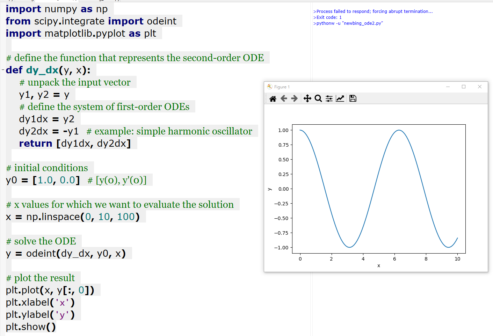

機電模擬 <<
Previous Next >> Pull_requests
newbing
提問: write me a python program to solve ordinary differential equation
回答:
import numpy as np
from scipy.integrate import odeint
def model(y, t):
k = 0.3
dydt = -k * y
return dydt
y0 = 5
t = np.linspace(0, 20)
y = odeint(model, y0, t)
print(y)
執行上列程式, 需要 numpy 與 scipy 等兩個 modules, 以 pip install numpy scipy 進行安裝執行. 執行結果如下:

提問: write me a python program to solve second order ordinary differential equations and plot the result by using matplotlib
回答:
import numpy as np
from scipy.integrate import odeint
import matplotlib.pyplot as plt
# define the function that represents the second-order ODE
def dy_dx(y, x):
# unpack the input vector
y1, y2 = y
# define the system of first-order ODEs
dy1dx = y2
dy2dx = -y1 # example: simple harmonic oscillator
return [dy1dx, dy2dx]
# initial conditions
y0 = [1.0, 0.0] # [y(0), y'(0)]
# x values for which we want to evaluate the solution
x = np.linspace(0, 10, 100)
# solve the ODE
y = odeint(dy_dx, y0, x)
# plot the result
plt.plot(x, y[:, 0])
plt.xlabel('x')
plt.ylabel('y')
plt.show()
執行結果如下:

提問: how to use cmsime and github pages to create static web site
回答:
cmsimde is a web-based content management system that is based on the World Wide Web1. You can use cmsimde to manage digital content by having a good understanding of HTML, CSS, and JavaScript1.
You can use GitHub Pages to host a static website about yourself, your organization, or your project directly from a repository on GitHub.comGitHub Pages is a static site hosting service that takes HTML, CSS, and JavaScript files straight from a repository on GitHub, optionally runs the files through a build process, and publishes a website2.
To create a GitHub Pages site, you can either create a new repository or choose an existing repository for your site. Then you need to decide which publishing source you want to use and create the entry file for your siteGitHub Pages will look for an index.html, index.md, or README.md file as the entry file for your site3.
Is there anything specific you would like to know about using cmsimde and GitHub Pages to create a static website?
提問: can you repeat the last answer in traditional chinese
回答:
當然可以。cmsimde 是一種基於全球資訊網的網頁內容管理系統。您可以通過對 HTML、CSS 和 JavaScript 有良好的理解來使用 cmsimde 管理數字內容。
您可以使用 GitHub Pages 直接從 GitHub.com 上的存儲庫中托管有關您自己、您的組織或您的項目的靜態網站。GitHub Pages 是一種靜態站點託管服務，它直接從 GitHub 存儲庫中提取 HTML、CSS 和 JavaScript 文件，可選地通過構建過程運行文件並發布網站。
要創建 GitHub Pages 站點，您可以創建一個新存儲庫或選擇一個現有存儲庫作為您的站點。然後您需要決定要使用哪個發布源並創建站點的入口文件。GitHub Pages 將查找 index.html、index.md 或 README.md 文件作為站點的入口文件。
提問: 想了解有關使用 cmsimde 和 GitHub Pages 創建靜態網站的具體信息
回答:
要使用 cmsimde 和 GitHub Pages 創建靜態網站，您需要執行以下步驟：
- 在 GitHub.com 上創建一個新的存儲庫或選擇一個現有的存儲庫作為您的站點。
- 決定要使用哪個發布源。有關更多信息，請參見“配置 GitHub Pages 站點的發布源”。
- 為您的站點創建入口文件。GitHub Pages 將查找 index.html、index.md 或 README.md 文件作為站點的入口文件。
- 在您的存儲庫中添加和編輯您的站點文件，並使用 git push 命令將更改推送到 GitHub.com。
- 訪問您的站點以查看更改。
補強上列答覆:
要使用 cmsimde 和 GitHub Pages 創建靜態網站，您需要執行以下步驟：
- 在 github.com 建立一個新倉儲
- 針對新倉儲設定 Github Pages, 以 main branch 設為網站根目錄
- 將倉儲 git clone 到近端, 加上 cmsimde 程式, 並將 up_dir 內容複製到倉儲根目錄
- 在近端執行動態網站, 用來編輯動態網站與靜態網站內容 (透過動態網站內容 generate_pages 而產生)
- 以 git add ., git commit -m "提交說明字串", git push (git commit 指令需要有身分設定, 也就是 home_ipv6 或 home_ipv4 目錄中的 user.name 與 user.email 進行提交, 至於 git push 需要 .git/config 中 url 可以透過 token 標示倉儲存取權, 而 home_ipv6/.gitconfig 若在純 IPv6 下還需要有 http.proxy 的設定)
- 持續利用 localhost 中的動態網站修改內容後, 轉為靜態然後重複上一個 acp 流程將改版送到 github.com
機電模擬 <<
Previous Next >> Pull_requests